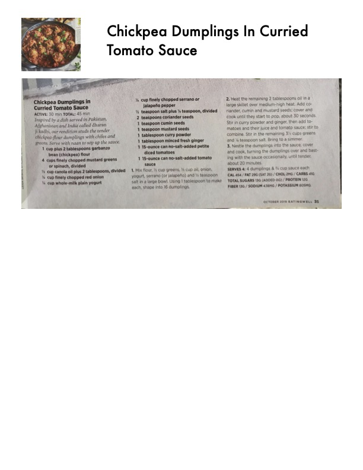

Chickpea Dumplings In Curried Tomato Sauce

Original cookbook page 50
Inspired by a dish served in Pakistani and Afghani and Indian cuisines, these fluffy dumplings are made with chickpea flour. Start by creating chickpea flour dumplings with chilis and garam and soak with water in one of the same. This vegan dish is comforting and filling in the best way.
Prep: 25 minutes • Cook: 25 minutes • Total: 50 minutes
Ingredients
- 1/4 cup chickpea flour
- 4 cups finely chopped mustard greens
- 1 cup cumin oil plus 2 tablespoons, divided
- 1 cup finely chopped red onion
- 1 cup whole milk plain yogurt
- 1/2 tablespoon ground coriander or garam masala
- 1/3 teaspoon salt plus 1 teaspoon, divided
- 2 teaspoons coriander seeds
- 1 teaspoon cumin seeds
- 1/2 cup finely chopped fresh ginger
- 1 tablespoon curry powder
- 1 teaspoon turmeric
- 1 medium fresh red ginger
- 1 cup water plus 1/4 cup, divided
- 1 14-ounce can diced tomatoes
- 1 14-ounce can no-salt-added tomato paste
Instructions
- Heat flour in a cast iron/enamel over medium heat while whisking constantly until lightly colored, 3 to 4 minutes. Transfer to a large bowl.
- Add mustard greens, 2 tablespoons oil, red onion, yogurt, turmeric (or zaʿtar) and 1/3 teaspoon salt to the flour. Working with your hands, knead each shape into 16 dumplings.
- Heat the remaining 1 tablespoon oil in a large skillet over medium-high heat. Add coriander and cumin seeds and cook for 30 seconds. Add ginger, then add curry powder and ginger, then add tomatoes and their juiced and tomato sauce. Stir to combine, but as the cooking. Stir. Add water to 1 tablespoon salt, bring to a simmer. Cover, reduce heat to medium-low, add the dumplings, cover and cook, turning the dumplings over and basically saucing with the sauce occasionally, until tender about 20 minutes.
Recipe #50 from collection